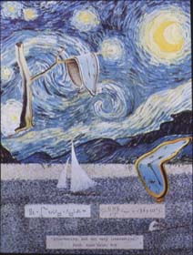
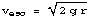
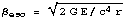
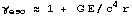
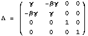

| < |
 23" x 17" collage 1995 |
|
|
|
|
For FolksOne must strain to hear the beat of Einstein's General Relativity. On November 22, 1975, a US Navy P3C anti-submarine patrol plane flew above the Chesapeake Bay for 15 hours, listening, listening to gravity with an atomic clock. Back at the airport, another clock listened to the rhythm of gravity. The beat in the sky was ever so slightly faster that the one on the ground. What was predicted was what was seen. The experimental result of this effect is typed on the right (53 nanoseconds after listening for 15 hours!). The artist's derivation of that effect is hand-written on the left. Prof. Alan Guth's criticism was based on the observation that the artist's method could explain only one test of general relativity at that time. |
For NerdsNewton's Carroll O. Alley measured the effect of different gravitational potentials on cesium beam atomic clocks. This work confirmed a prediction of general relativity. A creative use of the Lorentz group will reach the same conclusion.
The gravitational fields for a bound test mass are characterized by a member of the Lorentz group in the following manner: take the Newtonian orbital velocity,,express it relativistically, and , and use , a member of the Lorentz group.
The experiment measured the elapsed time difference between potentials while the plane was aloft. For the plane, the field is characterized by the Lorentz group using the orbital velocity at a distance r+h. On the ground, the distanced used for the matrix is r. Integrate the trace of the difference between the two matrices over the time of flight of the plane. This gives the correct algebraic result. |